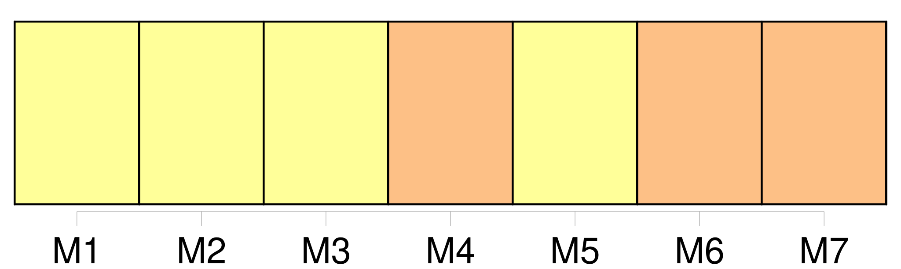

Longueur nb maillons : 12 mentions |
  |
Est -ce ma faute si j'eus douze ans quelques mois avant la déclaration de [la guerre] ?? [3 phrases]
Que ceux déjà qui m'en veulent se représentent ce que fut [la guerre] pour tant de très jeunes garçons : quatre ans de grandes vacances. [69 phrases] Mais vint [la guerre] [Elle] brisa la cloche. [12 phrases] Mes frères et mes sœurs commençaient d'en vouloir à [la guerre] , ils [la] trouvaient longue. [Elle] leur supprimait le bord de la mer. [22 phrases]
Aussi mon vrai souvenir de guerre précède [la guerre] [79 phrases]
Si j'insiste sur un tel épisode, c'est qu'il fait comprendre mieux que tout autre l'étrange période de [la guerre] , et combien, plus que le pittoresque, me frappait la poésie des choses. [430 phrases]
» [46 phrases] Elle ne se serait pas mariée, prétendait -elle ; car, si elle avait éprouvé pour Jacques une sorte d'amour au début de leurs fiançailles, celles -ci trop longues, par la faute de [la guerre] , avaient peu à peu effacé l'amour de son cœur. [65 phrases] [La guerre] rendait cette chose dangereuse. |

|
La ressource peut être téléchargée sur la page Ortolang
Si vous avez des questions ou vous voyez des erreurs, merci d'envoyer un mail à silvia.federzoni89@gmail.com
Site développé par S. Federzoni (contact)